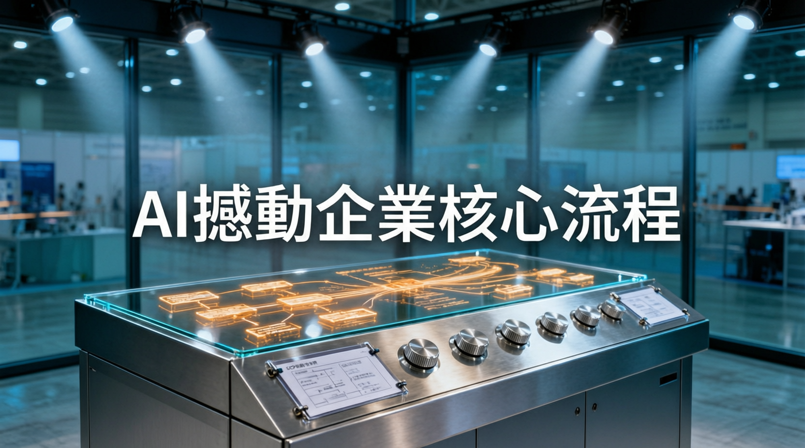

麥肯錫：人機協作經濟機遇達每年25兆美元，企業核心地帶才是轉型勝敗關鍵

AI 的顛覆性正由企業核心業務區域釋放價值，而非邊緣地帶。未來 3 至 5 年，懂得由核心業務流程開始思考 AI 發展的企業將成為行業領跑者。
未來的工作不再單靠人來定義，而是建立在人、AI 智能體（Agents）和機器人之間的動態協作上。企業主管部署策略時，不能只著眼於將當下任務自動化，更要從根本上重塑未來的工作流程與崗位職能。
人機協作在全球的總經濟機遇每年可高達 25 兆美元。單是美國，預期人機協作到 2030 年可釋放高達 2.9 兆美元的價值，其中約 1.8 兆美元的價值在核心營運中，而非邊緣業務。
市場對 AI 熟練度的需求增長速度超過任何其他技能，能有效使用和管理 AI 工具的能力需求在短短兩年內飆升了 7 倍。組織若仍將 AI 學習與發展視為選項，將日益凸顯結構性劣勢。
企業領袖需在各個層級展現清晰、堅定的領導能力，具備匯聚人類、AI 智能體和機器人的能力，組織混合團隊以訓練、協調和驅動業績。要成就戰略優勢就不能將發展直接丟給技術團隊。
下一階段 AI 競爭的關鍵不在於誰能製造最快的晶片，而在於誰能構建最具連接性的生態系統。「我們要停止競爭，開始通力合作。」—— 企業需從閉門造車轉向生態建設。
「無論是否科技產業參與者，對所有企業領導者尤關重要的觀點是：AI的顛覆性是由業務的核心區域釋放價值，而非單單在邊緣地帶發揮。」
— 李曉廬，麥肯錫全球董事合夥人在 Computex 2026 上，業界正構建 AI 物理基礎設施，行業領袖則致力站在定義 AI 應用的最前線。面對 AI 的關鍵轉折點，懂得由核心業務流程開始思考 AI 發展的企業，在 3 至 5 年後將可成為行業領跑者。AI 生態會是未來關鍵，由核心到邊緣，連結一起才是重點。
| 維度 | AI 1.0（邊緣） | AI 2.0（核心） |
|---|---|---|
| 主要任務 | 單一任務自動化 | 重塑工作流程與崗位職能 |
| 經濟價值 | 1.1 兆美元（邊緣） | 1.8 兆美元（核心） |
| 團隊構成 | 人類為主 | 人 + AI 智能體 + 機器人混合 |
| 領導角色 | 技術團隊主導 | 企業領袖統籌各層級 |